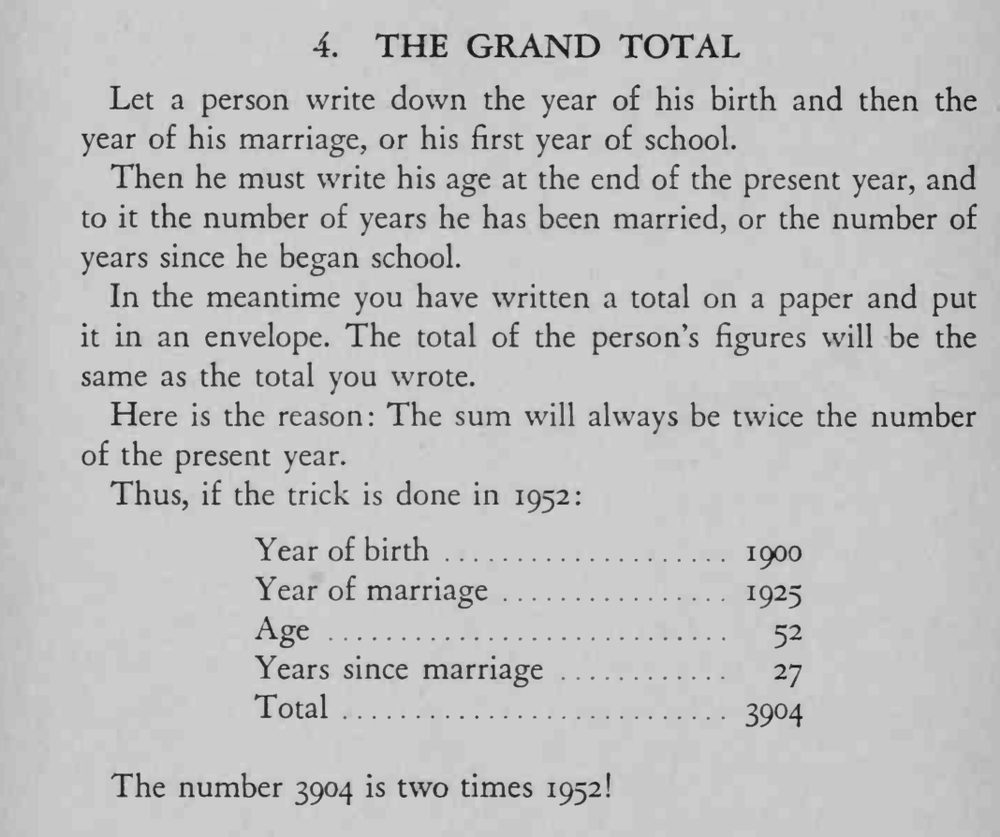

观众写下出生年、结婚年、年龄和婚龄，四数相加的总和，竟与你事先封进信封的数字一模一样。
总和永远等于今年年份的两倍，写预言时别把年份记错。

Let a person write down the year of his birth and then the year of his marriage, or his first year of school. Then he must write his age at the end of the present year, and to it the number of years he has been married, or the number of years since he began school. In the meantime you have written a total on a paper and put it in an envelope. The total of the person's figures will be the same as the total you wrote. Here is the reason: The sum will always be twice the number of the present year. Thus, if the trick is done in 1952: Year of birth 1900 Year of marriage 1925 Age 52 Years since marriage 27 Total 3904 The number 3904 is two times 1952!